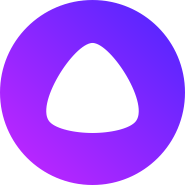

Cтудент 3 курса кафедры ИУ6 "Компьютерные системы и сети" МГТУ им. Баумана, Москва.
Интересуюсь backend-разработкой и высоконагруженными системами, компьютерными сетями, функциональным программированием, компиляторами.
 Полугодовая стажировка в Яндекс в команде разработки Платформы Диалогов в Алисе (kotlin backend). За время стажировки:
Летняя стажировка в Dodo Engineering на позиции .NET-Разработчика, во время которой я занимался:
4.8/5.0 -- средний балл за время обучения в университете;
Студент Школы бэкенд-разработки Яндекса 2024, поток Java;
Слушатель Открытого лектория Яндекса 2023;
Участник тренировок по алгоритмам 3.0 Яндекса;
В 2022 году окончил с золотым дипломом курс "Мобильная разработка на Java" от IT-школы Самсунга. Выпускной проект -- крипто- и стегано- графическим мобильным приложение.
Есть опыт работы с NodeJS, C++, React.
Samowarium -- ТГ бот, имулирующий клиента почты. Поддерживает множество соединений с почтовым сервером (отреверсили api) и мгновенно пересылает входящие письма. Автоматизирован деплой, настроен мониторинг.
Post app -- производная от твиттера и имиджборды.
CharS Application -- мобильное приложение, выпускной проект IT-школы Самсунга, который взял призёрство в школьных научных конференциях. Предоставляет возможность шифровать и прятать секретное сообщение-текст в тексте-контейнере.
BitTorrent Client -- торрент-клиент, который пишу на Rust с почти нуля по спецификации. На данный момент в процессе разработки.
{kind=link}